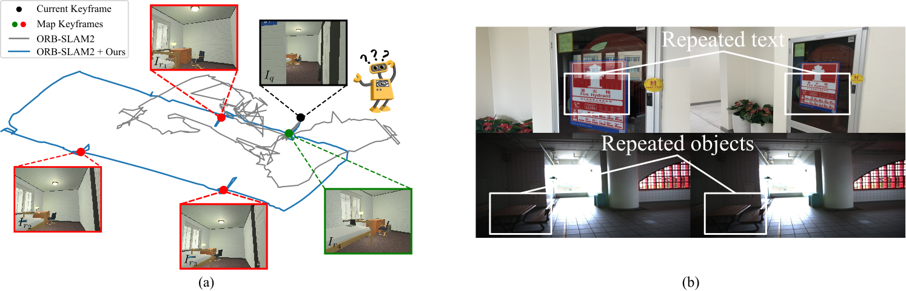
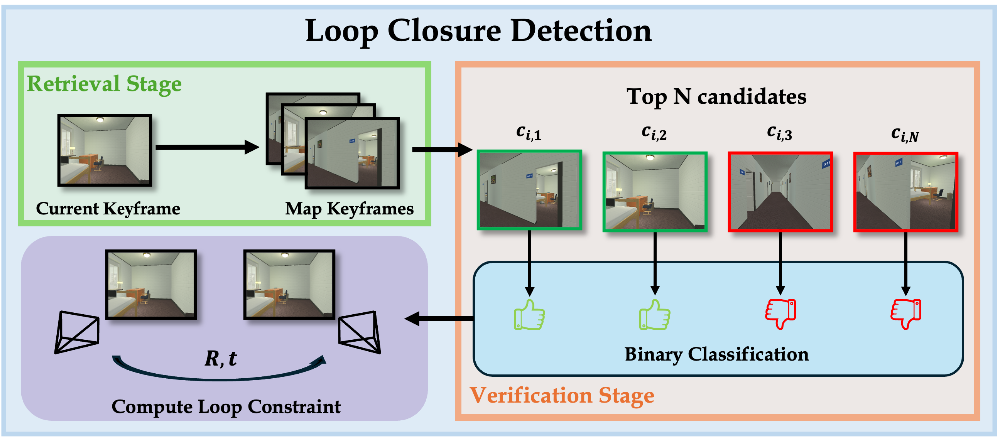
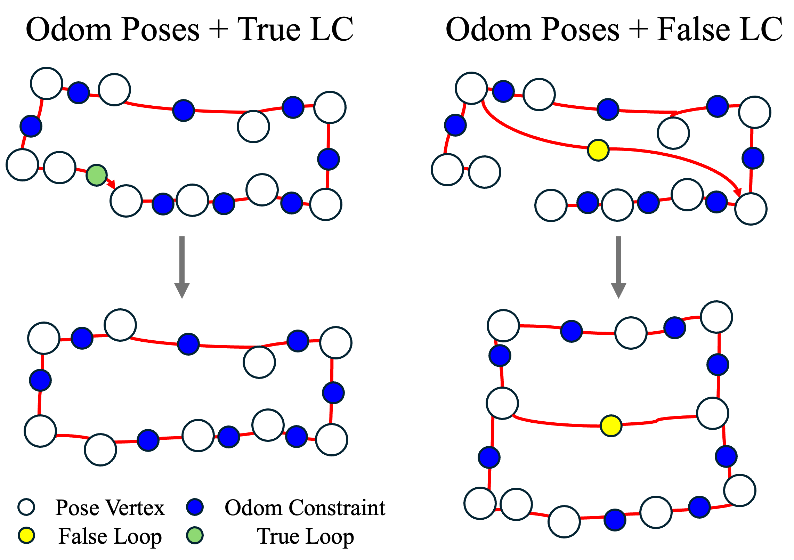
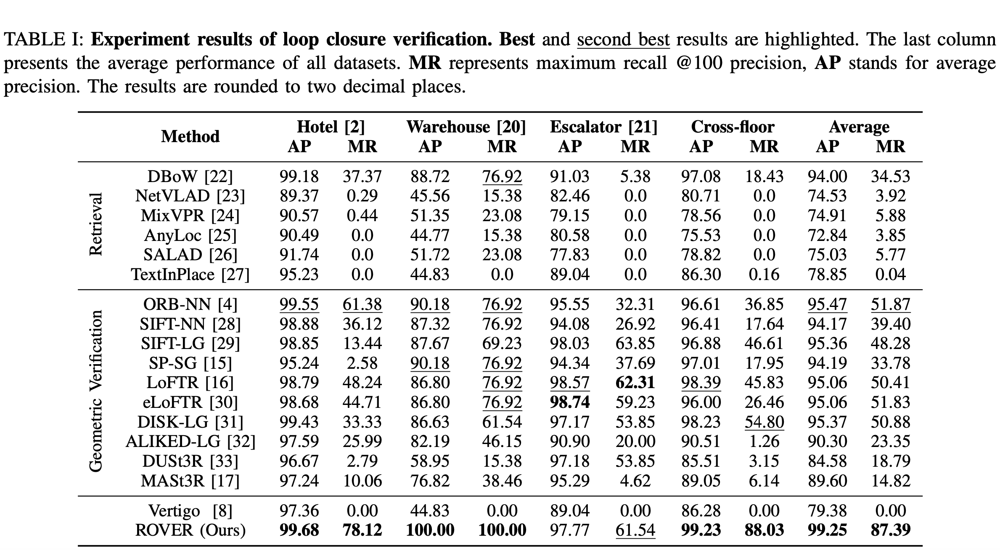
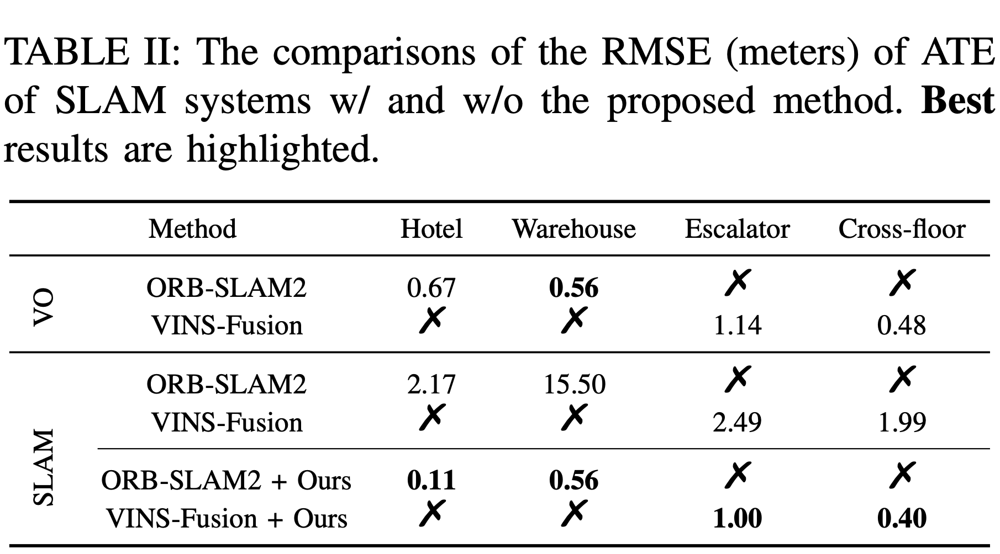
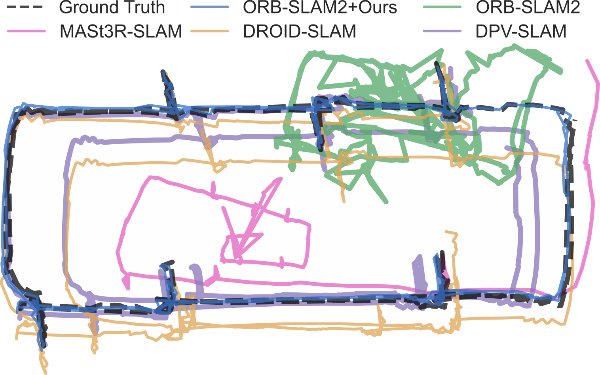

Loop closure detection is important for simultaneous localization and mapping (SLAM), which associates current observations with historical keyframes, achieving drift correction and global relocalization. However, a falsely detected loop can be fatal, and this is especially difficult in repetitive environments where appearance-based features fail due to the high similarity. Therefore, verification of a loop closure is a critical step in avoiding false positive detections. Existing works in loop closure verification predominantly focus on learning invariant appearance features, neglecting the prior knowledge of the robot’s spatial-temporal motion cue, i.e., trajectory. In this letter, we propose ROVER, a loop closure verification method that leverages the historical trajectory as a prior constraint to reject false loops in challenging repetitive environments. For each loop candidate, it is first used to estimate the robot trajectory with pose-graph optimization. This trajectory is then submitted to a scoring scheme that assesses its compliance with the trajectory without the loop, which we consider to be the trajectory prior, to determine if the loop candidate should be accepted. Benchmark comparisons and real-world experiments demonstrate the effectiveness of the proposed method. Furthermore, we integrate ROVER into state-of-the-art SLAM systems to verify its robustness and efficiency.

(a) A typical repetitive scenario where a SLAM algorithm (e.g., ORB-SLAM2) fails in appearance-based loop verification. Iq is the current keyframe (i.e., query image) used to detect loop closures, Iri are the retrieved images among the map keyframes (i.e., reference database). Due to the visual similarity, geometric verification cannot disambiguate between true positives (green dot) and false positives (red dot). However, the proposed method incorporates the trajectory cues to reject false loops robustly. (b) Typical scenes where text and semantics-based methods fail. The upper row shows a false loop with repeated text, and the lower row contains a false loop with repeated objects.
Loop Closure Detection

Two-stage Loop Closure Detection Pipeline. (i) Retrieval stage adopts image retrieval techniques to match historical keyframes. (ii) Verification stage serves as a binary classifier that rejects the falsely detected loop candidates.
Trajectory Prior Constraint
Our work proposes to examine the changes in the robot’s trajectory before and after incorporating a loop constraint into PGO. Intuitively, adding a true loop to PGO, the change of the robot trajectory would be continuous and graceful; while adding a false loop, the change would be chaotic and catastrophic.

System Pipeline
System overview of a complete SLAM pipeline with proposed loop verification method. Our main contribution lies in the verification stage (as explained in Section III-C), which takes loop constraints from the retrieval stage and the estimated trajectory from the front-end to predict a confidence score for rejecting false loops. In the end, the verified loops are accepted for the final back-end optimization.
Experiment Results
We conduct comprehensive experiments from two perspectives:
Loop closure verification:
We compare the proposed work with GV baselines, which are normally employed as the verification stage of LCD. Moreover, SOTA visual place recognition methods are benchmarked in reference to the LCD’s retrieval stage.

Localization accuracy:
We evaluate the localization accuracy by integrating the proposed method with visual SLAM baselines to demonstrate the practical efficacy.


Trajectory comparison of the Hotel dataset.